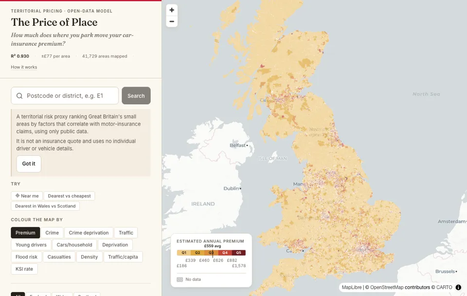
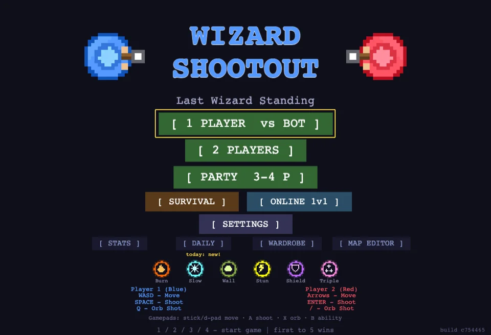
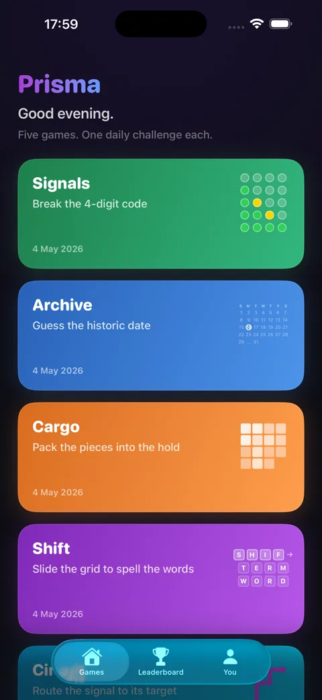

Anu Gnana
Projects
-

Vouched Live
A first-car running-cost checker for 17 to 24-year-olds in Great Britain and the parents helping them: insurance, tax, fuel and MOT as one monthly number, every figure an estimate based on public data.
-

GB Car-Insurance Risk Map Live
An expected annual motor-insurance premium for every small area in Great Britain, built from open data and calibrated against published price indices.
-

Wizard Shootout Released v1.0.0
A top-down arena duel inspired by Tank Trouble, but with wizards: solo against a bot, local on one keyboard or with controllers, or online with a friend.
-

-

Shiftie In App Review
A calm, daily word puzzle for iPhone: slide rows and columns of a letter grid, with wraparound, until the target words line up.
-

Shunt In App Review
A turn-based block sliding puzzle for iPhone: every move you make advances the board one tick. 61 chapters, 3,050 levels.
-

EA FC agent In development
An agent that plays EA FC on an unmodified PS5 through a perception, decision and action loop: an HDMI capture card for its eyes, a virtual gamepad over Remote Play for its hands, and a policy learned from its owner's own play.
-
gaffer In development
An advisor-only Fantasy Premier League tool that predicts player points and plans transfers. It never logs into FPL and never makes a transfer.


How these were built
-
Building with AI agents
Scheduled cloud agents and Claude Code sessions working from queue files: one pull request per package, the repo's own gate and a review before anything merges. With the unattended run of October 2026, and what went wrong in it.
Also
- PROSPECT
- CarryTheOne